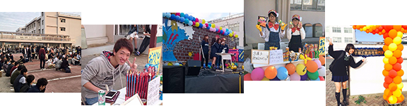
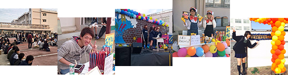

Access
住所：〒755-8555 山口県宇部市常盤台2丁目14番1号
TEL（0836）31-6111（代） FAX（0836）21-7117
■宇部新川駅から宇部市営バス
風呂ヶ迫行、ひらき台又は開・萩原行（循環）に乗車して高専グランド前下車徒歩3分（所要時間約20分）
■新山口駅から車で約40分
■宇部駅から車で約30分
■山口宇部空港から車で約15分
今年度は例年とは違い、今年度は駐車場がございませ ん。公共交通機関をご利用ください。
※自転車と、125cc以下のバイクは、グラウンドにございます、自転車・バイク用駐車スペースをご利用いただけます。
 
